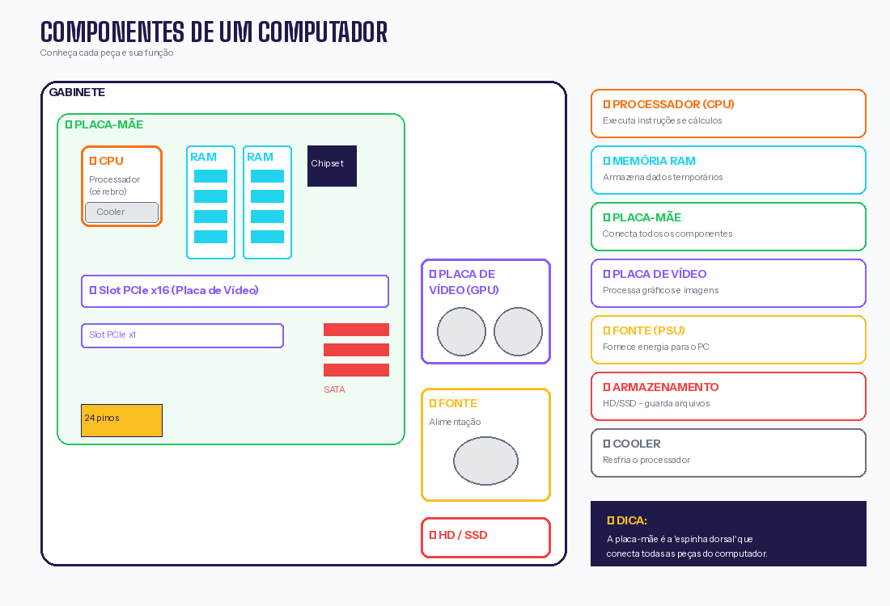
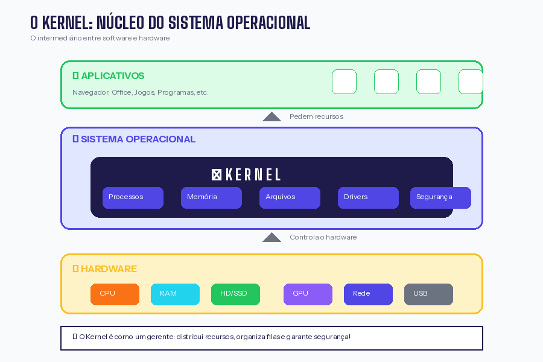

Aula — Arquitetura de Hardware: Conhecendo o Computador por Dentro¶
Informações da Aula
Disciplina: Sistemas Operacionais
Data: Fevereiro de 2026
Tipo: Aula Prática
Professor: Time Robótica
Tema: Desmontagem, identificação de componentes e remontagem de CPU
🎯 Objetivo da Aula¶
Nesta aula prática, você aprendeu a:
- ✅ Identificar os principais componentes de um computador
- ✅ Entender a função de cada peça
- ✅ Desmontar e remontar um PC com segurança
- ✅ Conectar corretamente os cabos para gerar vídeo
- ✅ Compreender o papel do Kernel no sistema
🖥️ Anatomia de um Computador¶
Antes de colocar a mão na massa, vamos entender o que tem dentro de um computador:

Visão Geral¶
Um computador é composto por hardware (parte física) e software (programas). Nesta aula, focamos no hardware.
┌─────────────────────────────────────────────────────────┐
│ GABINETE │
│ ┌─────────────────────────────────────────────────┐ │
│ │ PLACA-MÃE (Motherboard) │ │
│ │ ┌─────┐ ┌─────┐ ┌─────────────────────┐ │ │
│ │ │ CPU │ │ RAM │ │ Slots de Expansão │ │ │
│ │ └─────┘ └─────┘ └─────────────────────┘ │ │
│ │ ┌─────────────┐ ┌─────────────────────┐ │ │
│ │ │ Chipset │ │ Conectores SATA │ │ │
│ │ └─────────────┘ └─────────────────────┘ │ │
│ └─────────────────────────────────────────────────┘ │
│ ┌─────────┐ ┌─────────┐ ┌─────────────────────┐ │
│ │ Fonte │ │ HD │ │ Placa de Vídeo │ │
│ └─────────┘ └─────────┘ └─────────────────────┘ │
└─────────────────────────────────────────────────────────┘
🧩 Componentes Principais¶
1. 🧠 Processador (CPU)¶
O que é: O "cérebro" do computador. Executa todas as instruções e cálculos.
Onde fica: Encaixado no socket da placa-mãe, coberto pelo cooler.
Como identificar: Chip quadrado com muitos pinos embaixo (ou contatos dourados).
| Característica | Descrição |
|---|---|
| Função | Processar instruções e fazer cálculos |
| Marcas comuns | Intel (Core i3, i5, i7, i9) e AMD (Ryzen) |
| Medida de velocidade | GHz (Gigahertz) |
| Núcleos | Quanto mais, melhor para multitarefas |
Cuidado!
- Nunca toque nos pinos/contatos do processador
- O processador esquenta MUITO — sempre precisa de cooler
- A pasta térmica é essencial para dissipar o calor
┌───────────────┐
│ ▓▓▓▓▓▓▓▓▓ │ ← Cooler (ventilador)
│ ▓▓▓▓▓▓▓▓▓ │
├───────────────┤
│ ┌─────────┐ │ ← Processador (CPU)
│ │ ● ● ● │ │
│ │ ● ● ● │ │
│ └─────────┘ │
└───────────────┘
↓
Socket na placa-mãe
2. 🎛️ Placa-Mãe (Motherboard)¶
O que é: A "espinha dorsal" do computador. Conecta todos os componentes.
Onde fica: Presa ao gabinete com parafusos.
Como identificar: Maior placa verde/preta dentro do gabinete.
| Componente na placa | Função |
|---|---|
| Socket | Encaixe do processador |
| Slots de RAM | Encaixe das memórias |
| Slots PCIe | Placa de vídeo e outras placas |
| Conectores SATA | Ligar HD/SSD |
| Conectores de energia | Receber energia da fonte |
| Portas traseiras | USB, HDMI, VGA, Ethernet, áudio |
| Chipset | Controla a comunicação entre componentes |
| BIOS/UEFI | Firmware que inicia o computador |
┌─────────────────────────────────────────────────────┐
│ [USB] [USB] [HDMI] [VGA] [LAN] [AUDIO] │ ← Painel traseiro
├─────────────────────────────────────────────────────┤
│ ┌──────┐ │
│ │SOCKET│ ← CPU vai aqui ┌────┐ ┌────┐ │
│ └──────┘ │RAM │ │RAM │ │
│ └────┘ └────┘ │
│ ┌─────────────────────────────────────────────┐ │
│ │ PCIe x16 (Placa de vídeo) │ │
│ └─────────────────────────────────────────────┘ │
│ ┌─────────────────────────────────────────────┐ │
│ │ PCIe x1 │ │
│ └─────────────────────────────────────────────┘ │
│ ┌────┐ ┌────┐ │
│ [SATA] [SATA] [SATA] │BIOS│ │CHIP│ │
│ └────┘ └────┘ │
│ ┌──────────────────────┐ │
│ │ Conector Energia 24p │ [Painel Frontal] │
│ └──────────────────────┘ │
└─────────────────────────────────────────────────────┘
3. 💾 Memória RAM¶
O que é: Memória temporária (volátil). Guarda dados enquanto o PC está ligado.
Onde fica: Slots alongados próximos ao processador.
Como identificar: Pentes retangulares finos.
| Característica | Descrição |
|---|---|
| Função | Armazenar dados em uso no momento |
| Volátil | Perde tudo quando desliga |
| Capacidade comum | 4GB, 8GB, 16GB, 32GB |
| Tipos | DDR3, DDR4, DDR5 (não são compatíveis entre si!) |
Analogia
- RAM = Mesa de trabalho (espaço para trabalhar agora)
- HD/SSD = Armário (guarda arquivos permanentemente)
Quanto maior a mesa (RAM), mais coisas você pode fazer ao mesmo tempo!
Como encaixar:
↓ Trava (aberta)
┌─────────────────────────────────────┐
│ │ │ │ │ │ │ │ │ │ │ │ │ │ │ │ │ │ │
│ ▼ ▼ ▼ ▼ ▼ ▼ ▼ ▼ ▼ ▼ ▼ ▼ ▼ ▼ ▼ ▼ ▼ │ ← Pente de RAM
│ ┌─────┐ │
└──────────│ │─────────────────────┘
└─────┘
↑ Encaixe (tem uma divisória que impede encaixar errado)
4. 💿 Armazenamento (HD e SSD)¶
O que é: Onde ficam guardados seus arquivos, sistema operacional e programas.
Tipos:
| Tipo | Tecnologia | Velocidade | Durabilidade |
|---|---|---|---|
| HD (Hard Disk) | Disco magnético giratório | Lento | Frágil (tem peças móveis) |
| SSD (Solid State) | Memória flash (chips) | Muito rápido | Resistente |
| NVMe | SSD conectado direto na placa-mãe | Ultra rápido | Resistente |
Dica de upgrade
Trocar o HD por um SSD é a melhor melhoria custo-benefício! O PC fica MUITO mais rápido.
HD (Hard Disk) SSD (Solid State)
┌─────────────────┐ ┌─────────────────┐
│ ┌───────────┐ │ │ │
│ │ ○ ○ │ │ │ ▓▓▓▓▓▓▓▓▓▓▓▓ │
│ │ ◎ │ │ │ ▓▓ CHIPS ▓▓▓ │
│ │ ○ ○ │ │ │ ▓▓▓▓▓▓▓▓▓▓▓▓ │
│ └───────────┘ │ │ │
│ ↑ Disco │ │ Sem partes │
│ giratório │ │ móveis! │
└─────────────────┘ └─────────────────┘
5. ⚡ Fonte de Alimentação (PSU)¶
O que é: Converte a energia da tomada (AC) para energia que o PC usa (DC).
Onde fica: Geralmente na parte superior ou inferior traseira do gabinete.
Como identificar: Caixa de metal com ventilador e muitos cabos coloridos.
| Conector | Função |
|---|---|
| 24 pinos | Energia principal da placa-mãe |
| 4/8 pinos | Energia do processador |
| 6/8 pinos PCIe | Energia da placa de vídeo |
| SATA | Energia para HD/SSD |
| Molex | Energia para ventoinhas e acessórios |
Segurança
- SEMPRE desligue da tomada antes de mexer na fonte
- Nunca abra a fonte — ela armazena energia mesmo desligada
- Use fonte de qualidade — fonte ruim pode queimar o PC inteiro
6. 🎮 Placa de Vídeo (GPU)¶
O que é: Processa gráficos e imagens. Essencial para jogos e edição de vídeo.
Onde fica: Slot PCIe x16 da placa-mãe (o maior slot).
Como identificar: Placa grande com ventiladores, saídas de vídeo (HDMI, DisplayPort).
| Tipo | Descrição |
|---|---|
| Integrada | Embutida no processador. Básica. |
| Dedicada | Placa separada. Muito mais potente. |
Marcas: NVIDIA (GeForce) e AMD (Radeon)
Vídeo integrado vs dedicado
- Integrado: Suficiente para uso básico, Office, vídeos
- Dedicado: Necessário para jogos, 3D, edição de vídeo
7. 🌀 Sistema de Refrigeração¶
O que é: Mantém os componentes em temperatura segura.
Tipos:
| Tipo | Descrição |
|---|---|
| Cooler de CPU | Ventilador + dissipador sobre o processador |
| Fans do gabinete | Ventoinhas que circulam ar |
| Water Cooler | Sistema de refrigeração a água (avançado) |
Pasta térmica: Gel que melhora a transferência de calor entre CPU e cooler. Precisa trocar a cada 2-3 anos.
🔧 Problemas Comuns e Soluções¶

❌ PC não liga¶
| Possível causa | Solução |
|---|---|
| Fonte não conectada na tomada | Verificar tomada e chave da fonte (I/O) |
| Cabo de energia da placa-mãe solto | Reconectar o cabo de 24 pinos |
| Botão Power desconectado | Verificar fios do painel frontal |
| Fonte queimada | Testar com outra fonte |
| RAM mal encaixada | Remover e recolocar a RAM |
Teste básico: Se ao ligar as ventoinhas giram, a fonte está ok.
❌ PC liga mas não exibe imagem¶
| Possível causa | Solução |
|---|---|
| Monitor no cabo errado | Conectar na placa de vídeo (não na placa-mãe) |
| RAM mal encaixada | Tirar e recolocar a RAM com firmeza |
| Placa de vídeo mal encaixada | Reencaixar a placa de vídeo |
| Cabo de vídeo com defeito | Testar outro cabo HDMI/VGA |
| Monitor desligado/entrada errada | Verificar botão e input do monitor |
Dica de ouro
Quando não aparecer vídeo, tire a RAM, limpe os contatos com borracha branca e recoloque. Resolve 70% dos casos!
❌ PC desliga sozinho / reinicia¶
| Possível causa | Solução |
|---|---|
| Superaquecimento | Limpar poeira, trocar pasta térmica |
| Fonte fraca/defeituosa | Trocar a fonte |
| RAM com defeito | Testar um pente de cada vez |
| Sistema operacional corrompido | Reinstalar o SO |
❌ PC muito lento¶
| Possível causa | Solução |
|---|---|
| Pouca RAM | Adicionar mais memória RAM |
| HD antigo | Trocar HD por SSD |
| Muitos programas iniciando | Desativar programas na inicialização |
| Vírus/malware | Verificar com antivírus |
| Superaquecimento | Limpar e melhorar ventilação |
❌ Barulhos estranhos¶
| Barulho | Causa provável | Solução |
|---|---|---|
| Click click | HD com defeito | Fazer backup URGENTE e trocar HD |
| Zumbido alto | Ventoinha suja/com defeito | Limpar ou trocar ventoinha |
| Chiado | Fonte com problema | Trocar fonte |
| Vibração | Parafuso solto ou ventoinha desbalanceada | Apertar parafusos |
🧹 Limpeza e Conservação¶
Por que limpar?¶
- Poeira acumulada = superaquecimento
- Superaquecimento = lentidão e travamentos
- Casos extremos = componentes queimados
Com que frequência?¶
| Ambiente | Frequência |
|---|---|
| Casa limpa, sem pets | A cada 6-12 meses |
| Casa com pets/poeira | A cada 3-6 meses |
| Ambiente industrial | Mensal |
Como limpar¶
Materiais necessários:
- ✅ Pano de microfibra
- ✅ Pincel antiestático (ou pincel de maquiagem limpo)
- ✅ Ar comprimido (lata ou compressor)
- ✅ Álcool isopropílico (70% ou mais)
- ✅ Borracha branca (para contatos da RAM)
Passo a passo:
1. DESLIGUE o PC e tire da tomada
2. Aguarde 5 minutos (capacitores descarregarem)
3. Abra o gabinete (geralmente parafusos atrás)
4. Use ar comprimido para soprar a poeira
- Segure as ventoinhas para não girarem!
5. Use o pincel para poeira mais grudada
6. Limpe os contatos da RAM com borracha branca
7. Se for trocar pasta térmica:
- Limpe a antiga com álcool isopropílico
- Aplique quantidade do tamanho de um grão de arroz
8. Feche o gabinete
NUNCA faça isso!
- ❌ Usar aspirador de pó (gera estática)
- ❌ Usar pano molhado com água
- ❌ Soprar com a boca (umidade!)
- ❌ Limpar com o PC ligado
🧠 O Kernel: O Coração do Sistema Operacional¶
O que é o Kernel?¶
O Kernel é o núcleo do sistema operacional. Ele é o intermediário entre o hardware (peças físicas) e o software (programas).

┌─────────────────────────────────────────────────────┐
│ APLICATIVOS │
│ (Navegador, Word, Jogos, etc.) │
├─────────────────────────────────────────────────────┤
│ SISTEMA OPERACIONAL │
│ ┌─────────────────────────────────────────┐ │
│ │ K E R N E L │ │
│ │ (Gerencia tudo que acontece embaixo) │ │
│ └─────────────────────────────────────────┘ │
├─────────────────────────────────────────────────────┤
│ HARDWARE │
│ (CPU, RAM, HD, Placa de Vídeo, etc.) │
└─────────────────────────────────────────────────────┘
Funções do Kernel¶
| Função | Descrição |
|---|---|
| Gerenciar processos | Decide qual programa usa a CPU e quando |
| Gerenciar memória | Distribui RAM entre os programas |
| Gerenciar dispositivos | Comunica com hardware (drivers) |
| Gerenciar arquivos | Organiza dados no HD/SSD |
| Segurança | Impede que programas acessem áreas proibidas |
Analogia: O Kernel é como um gerente de hotel¶
🏨 HOTEL = COMPUTADOR
👔 Gerente (Kernel):
- Distribui quartos (memória) para hóspedes (programas)
- Organiza quem usa o elevador (CPU) e quando
- Cuida da segurança (não deixa hóspede entrar no quarto errado)
- Controla os funcionários (drivers de hardware)
🧳 Hóspedes (Aplicativos):
- Querem usar recursos do hotel
- Precisam pedir ao gerente
- Não podem fazer o que quiserem
🔧 Funcionários (Drivers):
- Fazem o trabalho pesado
- Recebem ordens do gerente
Tipos de Kernel¶
| Tipo | Descrição | Exemplo |
|---|---|---|
| Monolítico | Tudo junto no kernel (mais rápido) | Linux |
| Microkernel | Mínimo no kernel, resto fora (mais seguro) | MINIX |
| Híbrido | Mistura dos dois | Windows, macOS |
Kernel no Linux¶
No Linux, o kernel é literalmente chamado Linux (criado por Linus Torvalds em 1991).
O "Linux" que usamos (Ubuntu, Mint) é na verdade:
Por isso muitos chamam de GNU/Linux.
🔌 Conexões: Montando o PC¶
Ordem recomendada de montagem¶
1. Instalar CPU na placa-mãe
2. Instalar cooler da CPU (com pasta térmica)
3. Instalar memória RAM
4. Instalar placa-mãe no gabinete
5. Conectar fonte de alimentação
6. Instalar HD/SSD
7. Instalar placa de vídeo
8. Conectar cabos do painel frontal
9. Conectar cabos de energia
10. Conectar cabos de dados (SATA)
11. Fechar e testar
Cabos essenciais¶
| Cabo | De → Para | Obrigatório? |
|---|---|---|
| 24 pinos | Fonte → Placa-mãe | ✅ Sim |
| 4/8 pinos CPU | Fonte → Placa-mãe (perto da CPU) | ✅ Sim |
| SATA dados | HD/SSD → Placa-mãe | ✅ Sim |
| SATA energia | Fonte → HD/SSD | ✅ Sim |
| 6/8 pinos PCIe | Fonte → Placa de vídeo | Se tiver placa dedicada |
| Painel frontal | Gabinete → Placa-mãe | ✅ Para botão ligar |
| HDMI/VGA | Placa de vídeo → Monitor | ✅ Sim |
📋 Checklist de Montagem¶
Antes de ligar, verifique:
- [ ] CPU encaixada corretamente (seta alinhada)
- [ ] Cooler bem preso e com pasta térmica
- [ ] RAM encaixada até ouvir "click"
- [ ] Cabo 24 pinos conectado na placa-mãe
- [ ] Cabo 4/8 pinos da CPU conectado
- [ ] HD/SSD com cabo de dados E energia
- [ ] Placa de vídeo bem encaixada no slot
- [ ] Cabos do painel frontal conectados
- [ ] Nenhum parafuso solto dentro do gabinete
- [ ] Chave da fonte na posição "I" (ligado)
🎬 Vídeos Recomendados¶
| Vídeo | Canal | Descrição |
|---|---|---|
| Como montar um PC | Adrenaline | Tutorial completo de montagem |
| Entenda cada peça do PC | Diolinux | Explicação de componentes |
| O que é o Kernel | ByteMonk | Explicação técnica acessível |
| Limpeza de PC | Peperaio Hardware | Tutorial de limpeza |
✅ Checklist da Aula¶
- [ ] Sei identificar os principais componentes de um PC
- [ ] Entendo a função de cada componente
- [ ] Sei desmontar e remontar um computador básico
- [ ] Conheço problemas comuns e suas soluções
- [ ] Sei como fazer limpeza básica
- [ ] Entendo o que é o Kernel e sua função
📝 Glossário¶
| Termo | Significado |
|---|---|
| CPU | Central Processing Unit (processador) |
| GPU | Graphics Processing Unit (processador gráfico) |
| RAM | Random Access Memory (memória volátil) |
| HD | Hard Disk (disco rígido) |
| SSD | Solid State Drive (disco de estado sólido) |
| PSU | Power Supply Unit (fonte de alimentação) |
| BIOS | Basic Input/Output System (firmware básico) |
| UEFI | Unified Extensible Firmware Interface (BIOS moderno) |
| Socket | Encaixe do processador na placa-mãe |
| Chipset | Conjunto de chips que controla comunicação |
| Driver | Programa que permite o SO comunicar com hardware |
| Kernel | Núcleo do sistema operacional |
Dúvidas?
Hardware parece complicado no início, mas com prática fica natural! Qualquer dúvida, chama no grupo! 🔧